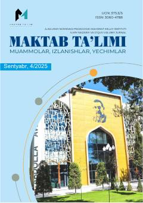

MTMaktab ta'limi muammolari va innovatsion pedagogik yechimlar haqidagi ilmiy-uslubiy jurnal.
Ushbu ilmiy-nazariy va o'quv-uslubiy jurnal maktab ta'limidagi muammolar, innovatsion boshqaruv texnologiyalari, ta'lim menejmenti va zamonaviy pedagogik yondashuvlarga bag'ishlangan. Nashrda ta'lim sifatini oshirish, fanlarni o'qitish metodikasi va xalqaro tadqiqotlar bo'yicha ilmiy maqolalar o'rin olgan.